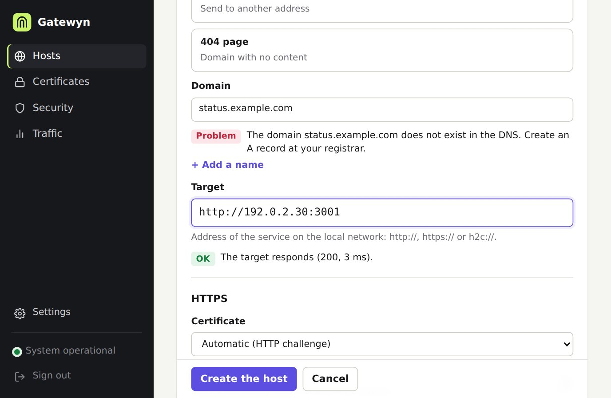
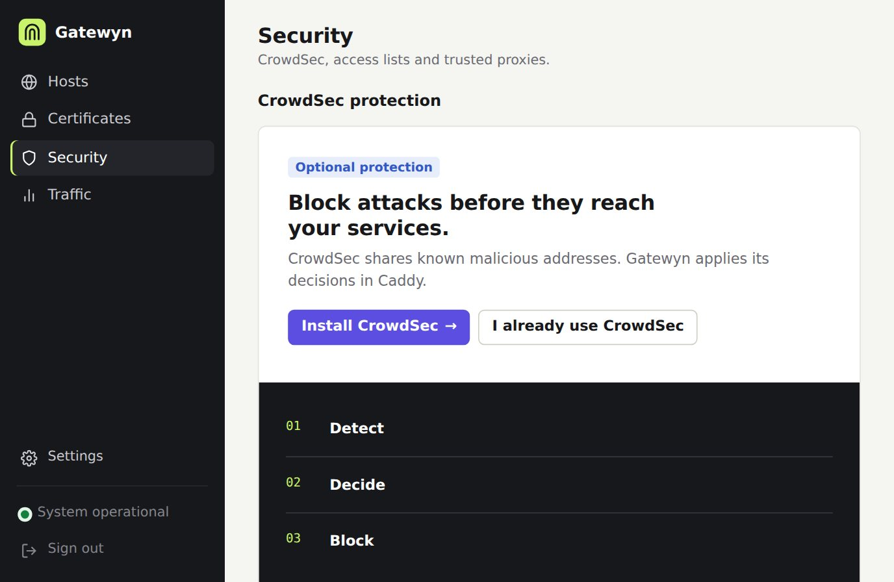
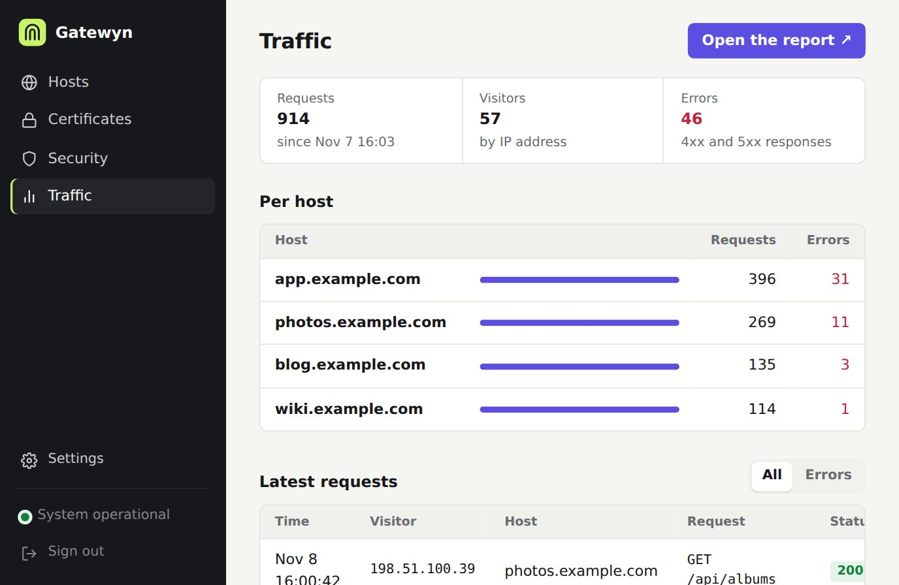
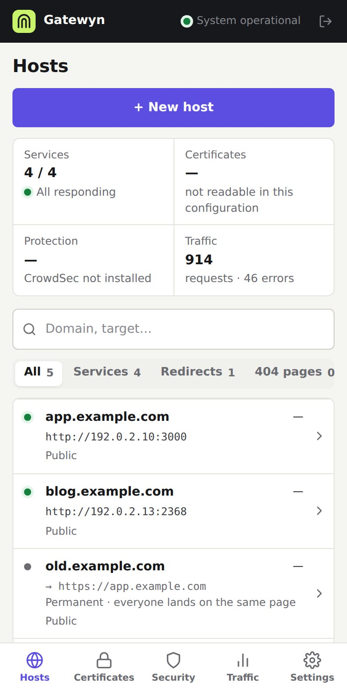

Publish a service over HTTPS in five minutes.
A simple web interface on top of Caddy. Two fields for a first service, checks before anything goes live, and error messages that tell you what to do.
The real interface, recorded on a throwaway instance with fictional data (example.com, 192.0.2.x).
From zero to HTTPS in three steps
No reverse proxy knowledge needed. Gatewyn drives Caddy for you and checks everything before publishing.
Start it
One Docker image with Gatewyn and Caddy inside. Create your administrator account on the first visit.
Fill two fields
A domain and the address of your service. Everything else is optional.
It is live
Gatewyn checks the DNS, the service and the certificate, then publishes.
Know what is wrong before you publish
The DNS and the service are checked as you type. When something is off, you get a sentence that says what to do, never a raw ACME code.
- “The domain does not exist in the DNS. Create an A record at your registrar.”
- Certificate problems explained on the Hosts page
- Service reachability checked live

Keep unwanted visitors out
Restrict a service to your office or VPN with an access list, and add CrowdSec and its AppSec firewall when you want more. Both are optional.
- Access lists by IP address or range
- CrowdSec decisions applied in Caddy
- Read-only integrations: nothing is banned without your say

See what hits your services
Requests, visitors and errors per host, read from Caddy’s access log. On by default for 30 days, and you can turn it off.
- Latest requests and a summary per host
- Spot scans and errors at a glance
- Optional GoAccess report

Made to be used on a phone
A sober interface that works on a small screen, in English or French. Check a service or add a host from the sofa.
- Bottom navigation on mobile
- Language follows your browser, or choose it in Settings

Small, private and yours
Gatewyn tries to stay out of your way and out of your network.
One Docker imageGatewyn and Caddy together, started with a compose file of a few lines.
SQLite, nothing elseNo external database. A copy is made before each migration.
No default credentialsYou create the administrator account on the first visit, and there is an audit log.
No phone-homeNo automatic update and no outside call. Updates are your decision.
No Docker socketGatewyn never touches Docker. Companion apps are optional compose services.
Open sourceMIT license, pinned image versions, never “latest”.
Try it in five minutes
One command, then open the interface and create your account.
Keep port 8088 off the Internet: the interface is for your private network only.